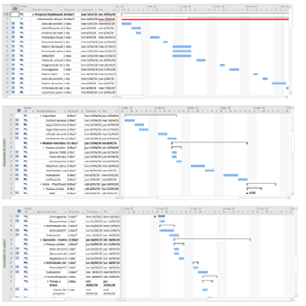
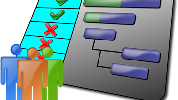
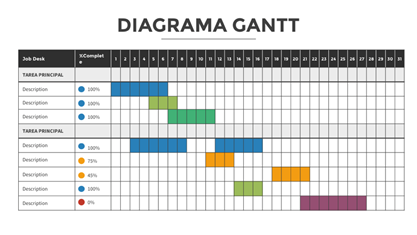
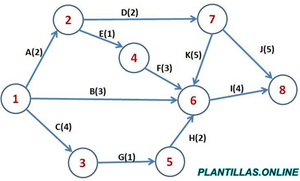
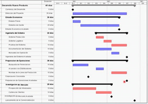

<div class="main-content">
    <div class="container-fluid">
        <div class="card">
            <div class="card-header card-header-info gray">
                <h3 class="card-title">Módulo 2: Gestión del cronograma</h3>
                <!-- <p class="card-category">Created using Roboto Font Family</p> -->
            </div>
            <div class="card-body">
                <div id="typography">
                    <div class="card-title">
                        <h2>Cronograma</h2>
                        <div class="container">
                            <p class="justify-content">
                                De forma general podríamos definir el cronograma de un proyecto como: Documento que
                                muestra ordenadamente las diferentes tareas e hitos que forman el proyecto, las
                                relaciones de precedencia y antecedencia entre ellas, su duración, y el inicio y fin del
                                proyecto. El cronograma del proyecto, el siguiente punto es conocer las diferentes
                                formas de representarlo.
                            </p>
                            <p class="justify-content">
                                Toda esta información sobre los interesados del proyecto se debe concentrar en un
                                documento (Registro de interesados) para su fácil práctica consulta. La gestión eficaz
                                de los
                                interesados del proyecto parte de la oportuna identificación y mantenimiento de un
                                registro de los mismos, para lo cual el Gerente de proyectos cuenta con un instrumento
                                que se
                                denomina registro de los interesados.

                                En él se documenta información sobre los datos de contacto de cada uno de los
                                interesados, sus requerimientos, expectativas, evaluación de su grado de influencia,
                                interés y
                                postura (a favor o contraria) entre otros aspectos. Aquí les compartimos una plantilla
                                que puede
                                guiar en el levantamiento y mantenimiento del registro de interesados.
                            </p>
                            <p class="text-center">
                                
                            </p>
                        </div>
                        <h3><b>Como hacer el cronograma del proyecto</b></h3>
                        <div class=" container">
                            <p class="justify-content">
                                El punto de partida para planificar las actividades del proyecto son los trabajos
                                definidos. A partir de esta deben definirse las actividades necesarias para completar
                                cada uno de paquetes, lo cual suele hacerse junto con expertos o el equipo del proyecto.
                                Una vez definidas el conjunto de actividades que componen el proyecto, estas deben
                                ordenarse en función de las relaciones de precedencia y antecedencia oportunas, las
                                cuales pueden ser de carácter obligatorio o no.De esta forma las tareas pueden ordenarse
                                según cuatro tipos de relaciones, indicando el inicio y el fin de la tarea, uniéndolas
                                con otras.
                            </p>
                            <p class="justify-content">
                                Estas relaciones serán las que nos permitirán ordenar las tareas en el momento de hacer
                                el cronograma de actividades del proyecto. Este paso consiste en estimar el número de
                                horas, días, semanas, etc. que se requieren para completar cada una de las actividades
                                del proyecto. Para ello pueden usarse las técnicas de estimación de la duración de
                                actividades explicadas en otros artículos, las cuales pueden basarse en el análisis de
                                datos estadísticos, o técnicas de trabajo grupal.
                            </p>
                            <p class="text-center">
                                
                            </p>
                            <p class="justify-content">
                                Uniendo los plazos con el diagrama de tareas tendremos un primer cronograma de
                                actividades que no tiene en cuenta los recursos ni su disponibilidad. Esto equivale a
                                considerar que disponemos de recursos ilimitados en cualquier momento, lo que
                                habitualmente es falso. Dentro de este primer cronograma debemos incluir los hitos del
                                proyecto, que serán eventos que se corresponderán con alguna entrega, compromiso, o
                                punto importante del proyecto, y que nos servirán para controlar este, y para informar
                                del avance de forma resumida. Por tanto, el siguiente paso será incluir los recursos, lo
                                que implica asignar a cada tarea el recurso que la ejecutará, considerando su porcentaje
                                de dedicación (en el caso de realizar varias tareas simultáneamente), su capacidad de
                                trabajo máxima, y su calendario laboral específico si lo tuviera. No disponemos del
                                recurso en el momento necesario, lo que nos obliga a ajustar las fechas de la tarea a la
                                disponibilidad del recurso. En el cronograma de ejemplo podemos ver que la tarea 3 se ha
                                situado por detrás de la tarea 4 al compartir el recurso B con ella.
                            </p>
                            <p class="text-center">
                                
                            </p>
                            <p class="justify-content">
                                La inclusión del márgenes en el cronograma se hace con la intención de proteger los
                                entregables del proyecto, bien sean parciales o el final. De esta forma, el margen debe
                                colocarse siempre antes del entregable que queramos proteger, y siempre de acuerdo a los
                                riesgos asociados a las tareas que llevan hasta este entregable.
                                Plazo fuera de lo solicitado. En este caso deberemos aplicar técnicas de compresión del
                                cronograma para conseguir reducir el plazo. Disponibilidad de un determinado recurso en
                                el momento que se necesita, lo que implicará tener que replantear la tarea afectada con
                                otro recurso, o cambiar las fechas de esta.
                            </p>
                            <h4><b>Tipos de cronograma</b></h4>
                            <ul>
                                <li><b>Cronograma de Gantt:</b> permite ver directamente las fechas de inicio y fin de
                                    cada tarea, su duración, y la fecha de fin del proyecto.</li>
                            </ul>
                            <p>
                                
                            </p>
                            <ul>
                                <li><b>Cronograma de PERT:</b> muestra de una forma más clara las relaciones de
                                    dependencia entre tareas, y el orden en que estas deber de ser ejecutadas.</li>
                            </ul>
                            <p>
                                
                            </p>
                            <ul>
                                <li><b>Cronograma de hitos:</b> El hito se sitúa al inicio o finalización de un conjunto
                                    de tareas, y mantiene una relación con estas, por lo que a la hora de reportar el
                                    estado del proyecto, lo podemos hacer de forma resumida reportando el estado de los
                                    principales hitos que lo componen</li>
                            </ul>
                            <p>
                                
                            </p>
                        </div>
                    </div>
                </div>
            </div>
        </div>
    </div>